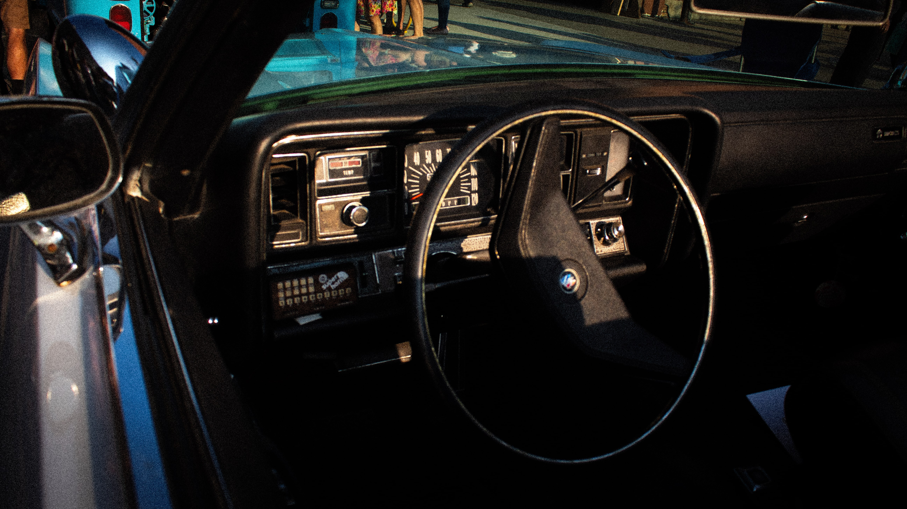
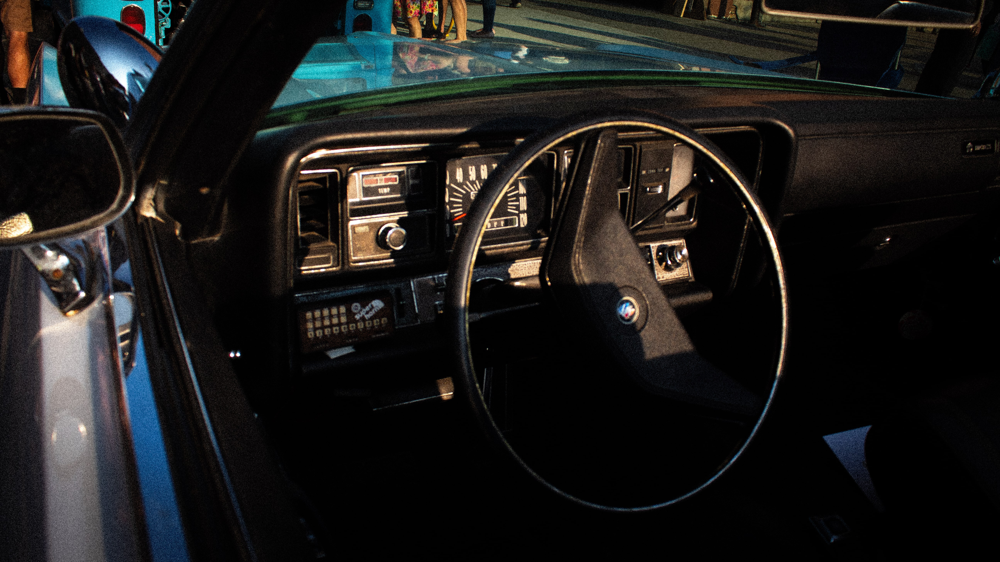

Say Hello to My Little Friend.
(Aka my Canon T6)
(Aka my Canon T6)
Beginning in middle school, I found my humble start waving around an old phone, attempting to capture the world in a lens similar to my own. After having obtained my current Canon T6 in 2017, it marked the growth of a significant skillset of mine. As the years went by, I further developed my creative eye and post-processing of images, which resulted in the artistry seen below.
 
